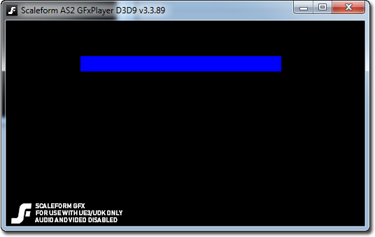
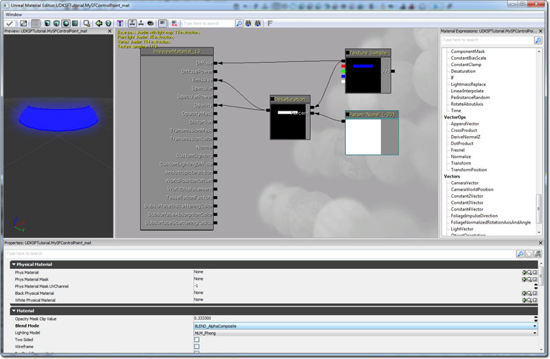
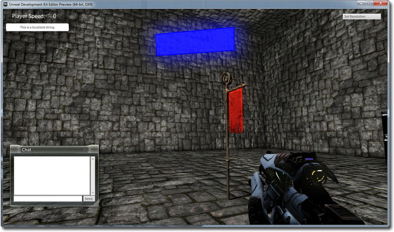

UDN
Search public documentation:
GFxVolumeStatusBarKR
English Translation
日本語訳
中国翻译
Interested in the Unreal Engine?
Visit the Unreal Technology site.
Looking for jobs and company info?
Check out the Epic games site.
Questions about support via UDN?
Contact the UDN Staff
日本語訳
中国翻译
Interested in the Unreal Engine?
Visit the Unreal Technology site.
Looking for jobs and company info?
Check out the Epic games site.
Questions about support via UDN?
Contact the UDN Staff
상태바가 포함된 콘트롤 볼륨 추가하기
문서 변경내역: James Tan 작성. 홍성진 번역.
개요
이 튜토리얼에서는 작동하는 상태바가 포함된 아주 기본적인 콘트롤 볼륨을 추가하는 법을 다룹니다. 이 튜토리얼은 세 가지 버전이 있습니다. 버전 1 은 옵션 코드 2 나 3 을 추가하기 전에 완성해야 하는 것입니다.
- 상태바가 화면에, HUD 에 중심을 맞춰 그려집니다.
- 상태바가 콘트롤 볼륨 중앙에 떠다디는 바 형태로 표시됩니다. 이는 게임 월드에 물리적으로 존재하는 것으로, 항상 플레이어를 향합니다.
- 바가 HUD 에 다시, 이번에는 Canvas.Project 를 사용하여 콘트롤 볼륨을 기준으로 한 위치에 그려집니다. 플레이어가 움직이면 상태바도 HUD 를 따라 움직이며, 그 위치는 항상 콘트롤 볼륨의 위치를 기준으로 합니다.
플래시 셋업
- 새로운 AS 2 Document 를 만듭니다.
- Document 크기는 512x256 으로 합니다.
-
 중요: Document 배경은 검정색으로 합니다.
중요: Document 배경은 검정색으로 합니다.
- Document 중앙에 파랑 사각형을 만듭니다.
- 그것을 무비 클립으로 변환합니다.
- 인스턴스 이름을 BlueStatusBar 로 합니다.
- SWF 파일을 /UDKGame/Flash/UDKSFTutorial/CVStatusBar.SWF 로 저장하고 퍼블리시합니다.
- SWF 를 UDK 로 임포트합니다.

HUD 를 중심으로 하는 상태바
맵 아무데나 실제로 놓을 수 있는 콘트롤 볼륨을 만듭니다.
class SFControlVolume extends Volume
placeable;
var bool bControlled;
var int ElapsedTime;
var int PercentCaptured;
// 수정 가능 프로퍼티
var(TimeToControl) int TimeToControl;
var(TimeToControl) float UpdateRate;
var() SwfMovie Movie;
var Info ControlTimer;
var SFControlVolumeMovie CVMovie;
event PostBeginPlay()
{
Super.PostBeginPlay();
ControlTimer = Spawn(class'SFVolumeControlTimer', self);
}
event Touch(Actor Other, PrimitiveComponent OtherComp, vector HitLocation, vector HitNormal)
{
Super.Touch(Other,OtherComp,HitLocation,HitNormal);
if(!bControlled)
{
// 타이머를 켜고, X 초마다 틱 시킵니다. X = UpdateRate, 업데이트 속도입니다.
ControlTimer.SetTimer(UpdateRate,true);
}
// 플레이어가 이 볼륨을 건드리거나 그 안에 있을 때만 상태바를 표시합니다.
CreateControlVolumeMovie();
UpdateStatusBar();
}
event UnTouch(Actor Other)
{
Super.UnTouch(Other);
// 캡처 타이머를 리셋합니다.
ControlTimer.ClearTimer();
// 플레이어가 볼륨을 떠나면 상태바를 닫습니다.
CVMovie.Close(true);
CVMovie = none;
if(!bControlled)
{
ElapsedTime = 0;
}
}
function StartControlling(SFVolumeControlTimer VC)
{
local int PercentCaptured;
if (VC == ControlTimer)
{
ElapsedTime++;
`log("Time to capture: " @ TimeToControl - ElapsedTime);
UpdateStatusBar();
// 제어에 필요한 시간이 경과하면 볼륨을 캡처하고 타이머를 지웁니다.
if(ElapsedTime >= TimeToControl)
{
`log("Captured!");
bControlled = true;
ControlTimer.ClearTimer();
}
}
}
function UpdateStatusBar()
{
PercentCaptured = (100 * float(ElapsedTime)) / float(TimeToControl);
CVMovie.UpdateStatusBar(self, PercentCaptured);
}
function CreateControlVolumeMovie()
{
CVMovie = new class'SFControlVolumeMovie';
CVMovie.MovieInfo = Movie;
CVMovie.SetTimingMode(TM_Real);
CVMovie.Start();
}
defaultproperties
{
TimeToControl=100
UpdateRate=0.1
}
class SFVolumeControlTimer extends Info;
var SFControlVolume CV;
event PostBeginPlay()
{
Super.PostBeginPlay();
CV = SFControlVolume(Owner);
}
event Timer()
{
CV.StartControlling(self);
}
defaultproperties
{
TickGroup=TG_PreAsyncWork
bStatic=false
RemoteRole=ROLE_None
}
class SFControlVolumeMovie extends GFxMoviePlayer;
var GFxObject StatusBarMC;
function bool Start(optional bool StartPaused = false)
{
Super.Start();
Advance(0);
StatusBarMC = GetVariableObject("_root.BlueStatusBar");
return true;
}
function UpdateStatusBar(SFControlVolume CV, int PercentCaptured)
{
local GFxObject.ASDisplayInfo DI;
DI.hasXScale = true;
DI.hasAlpha = true;
DI.XScale = PercentCaptured;
DI.Alpha = 100;
if (DI.XScale >= 100)
{
DI.XScale = 101;
}
else if (DI.XScale == 0)
{
DI.XScale = 1;
DI.Alpha = 0;
}
StatusBarMC.SetDisplayInfo(DI);
}
defaultproperties
{
bDisplayWithHudOff = false
}
- 이제 BSP 빌더 브러시를 사용해서 레벨에 콘트롤 볼륨을 추가합니다.
- 볼륨의 프로퍼티 창을 엽니다. (F4)
- Time To Control 을 설정합니다. (캡처하는 데 필요한 최대 틱 수입니다.)
- Update Rate 를 설정합니다. (1 초에 상태바 '틱'을 얼마나 자주 시킬지 입니다. 수치가 낮을 수록 틱 시간이 빨라집니다.)
- Movie 필드를 앞서 임포트한 SWF 파일로 설정합니다.
- 레벨을 저장하고 테스트합니다!
게임 월드에 떠다니는 상태바
게임 월드의 볼륨 중앙에 상태바를 물리적으로 추가시키려면, 먼저 SFControlVolume 클래스를 변경합니다.
// 클래스 맨위에 이 글로벌 변수를 추가합니다. var() StaticMesh Mesh; var() vector TranslationOffset; var() array<MaterialInterface> Materials; var() TextureRenderTarget2D RenderTexture; var SFControlVolumeMesh CVMesh; // Super.Touch(); 바로 뒤, Touch() 이벤트 함수에 이 코드를 추가합니다. CVMesh = Spawn(class'SFControlVolumeMesh'); CVMesh.Mesh.SetStaticMesh(Mesh); CVMesh.Mesh.SetMaterial(0,Materials[0]); CVMesh.SetLocation(self.Location + TranslationOffset); CVMesh.PC = Other; // UnTouch() 이벤트 함수에 이 코드줄을 추가합니다. CVMesh.Destroy(); // CVMovie.MovieInfo = Movie; 뒤, CreateControlVolumeMovie() 함수에 이 코드줄을 추가합니다. CVMovie.RenderTexture = RenderTexture;
class SFControlVolumeMesh extends StaticMeshActor
placeable;
var vector PlayerLoc;
var actor PC;
var() editinline const StaticMeshComponent Mesh;
function Tick(float fDeltaTime)
{
Super.Tick(fDeltaTime);
// 항상 플레이어를 바라봅니다.
PlayerLoc = PC.Location;
SetRotation(Rotator(PlayerLoc - self.Location));
}
defaultproperties
{
bStatic = false
bMovable = true
Begin Object class=StaticMeshComponent Name=StaticMeshComp1
CollideActors = False
BlockActors = false
BlockRigidBody = False
End Object
Mesh = StaticMeshComp1
Components.Add(StaticMeshComp1)
}
- 이제 BSP 빌더 브러시를 사용해서 레벨에 콘트롤 볼륨을 추가합니다.
- 볼륨의 프로퍼티 창을 엽니다. (F4)
- Time To Control 을 설정합니다. (캡처하는 데 필요한 최대 틱 수입니다.)
- Update Rate 를 설정합니다. (1 초에 상태바 '틱'을 얼마나 자주 시킬지 입니다. 수치가 낮을 수록 틱 시간이 빨라집니다.)
- Movie 필드를 앞서 임포트한 SWF 파일로 설정합니다.
- 콘텐츠 브라우저를 엽니다.
- TextureRenderTarget2D 를 아무 이름으로나 새로 만들고, 해상도를 512x256 로 하여 SWF 에 맞춥니다.
- Material 을 아무 이름으로나 새로 만듭니다.
- Material 안에서 TextureSample 을 새로 추가합니다.
- 새 TextureSample 의 Texture 필드에 새로 만든 TextureRenderTarget2D 를 삽입합니다.
- TextureSample 의 Diffuse 출력(검정 사각형)을 Material 의 Diffuse 입력에 연결합니다.
- Material 의 Blend Mode 를 BLEND_AlphaComposite (알파 합성)으로 설정합니다.
- Color->New Desaturation 을 추가합니다.
- Parameters->New ScalarParameter 를 추가합니다.
- Parameter 의 Default Value 를 -20 으로 설정합니다.
- TextureSample 의 Diffuse 출력(검정 사각형)을 Desaturation 의 A 에 연결합니다.
- Param 'None' 을 Desaturation 의 B 에 연결합니다.
- Desaturation 의 출력을 Material 의 Opacity 와 Emissive 에 연결합니다.
- Material 창을 닫고 저장합니다.
- 새로운 머티리얼과 렌더 텍스처로 된 패키지를 저장합니다.

- 볼륨의 프로퍼티 창을 엽니다. (F4)
- Mesh 필드를 평면 모양 메시로 설정합니다. 이런 것으로요: dwStaticMeshes.Plane
- Translation Offset 을 설정합니다. (상태바를 콘트롤 볼륨 중심을 기준으로 움직입니다.)
- Material 슬롯을 새로 추가합니다.
- 새로 만든 머티리얼을 Material 슬롯 0 에 할당합니다.
- 새로 만든 TextureRenderTarget2D 를 RenderTexture 필드에 할당합니다.
- 레벨을 저장하고 테스트합니다!
HUD 의 상대적 위치에 상태바
이 버전은 Canvas Project 를 사용해서 볼륨의 상대적 위치에 따라 HUD 위에 상태바를 그립니다. 주위를 둘러봐도 상태바는 상대적으로 똑같은 위치에 있을 수 있도록 HUD 에서 움직여 다닙니다.
event PostRender()
{
local SFControlVolume SFCV;
super.PostRender();
// 레벨에 있는 콘트롤 볼륨을 모두 찾습니다.
foreach WorldInfo.AllActors(class'SFControlVolume',SFCV)
{
//콘트롤 볼륨의 3D 월드 위치를 2D 화면 위치로 투영합니다.
if (SFCV.CVMovie != none)
{
SFCV.CVMovie.UpdatePosition(Canvas.Project(SFCV.Location));
}
}
// HUD 틱입니다.
if (HudMovie != none)
{
HudMovie.TickHud(0);
}
}
var int Width, Height;
function bool Start(optional bool StartPaused = false)
{
local float x0, y0, x1, y1;
super.Start();
Advance(0.0);
StatusBarMC = GetVariableObject("_root.BlueStatusBar");
GetVisibleFrameRect(x0, y0, x1, y1);
Width = x1-x0;
Height = y1-y0;
return true;
}
function UpdatePosition(Vector ScreenPos)
{
self.SetViewPort(ScreenPos.X,ScreenPos.Y,Width,Height);
}
